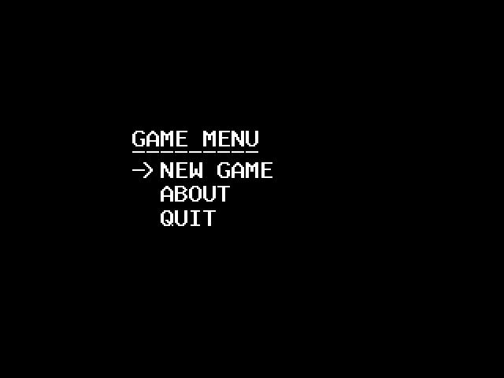
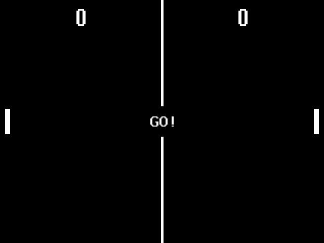
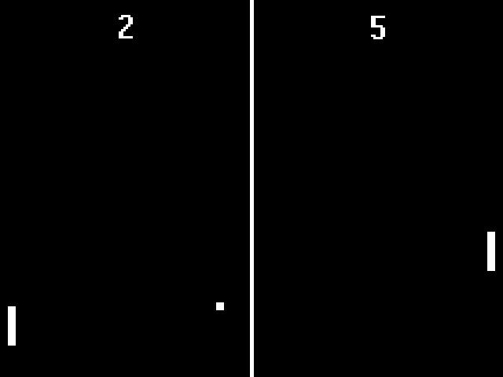

If you think spong could use some more patching, please send the patches here and I will include them in the archive. If there are enough patches I'll publish a new release.
Contact me at: Loui Chang <louipc dot ist at gmail company>
Spong's original developer is Eric Johnson.
Spong's original home was at http://www.coding-zone.com/?page=SPong


